Hardware / ASIC characterization
ASIC readout electronics
Prototype characterization for the future LEGEND-1000 readout
At Berkeley Lab, I characterized the L1K65 prototype being developed for the future LEGEND-1000 readout, using pulser measurements, digital waveform analysis, and a cooled germanium detector. LEGEND-200 currently uses a low-mass front end (LMFE), whose production and testing I also worked on.
LMFE production and testing for LEGEND-200
Readout principles and measurements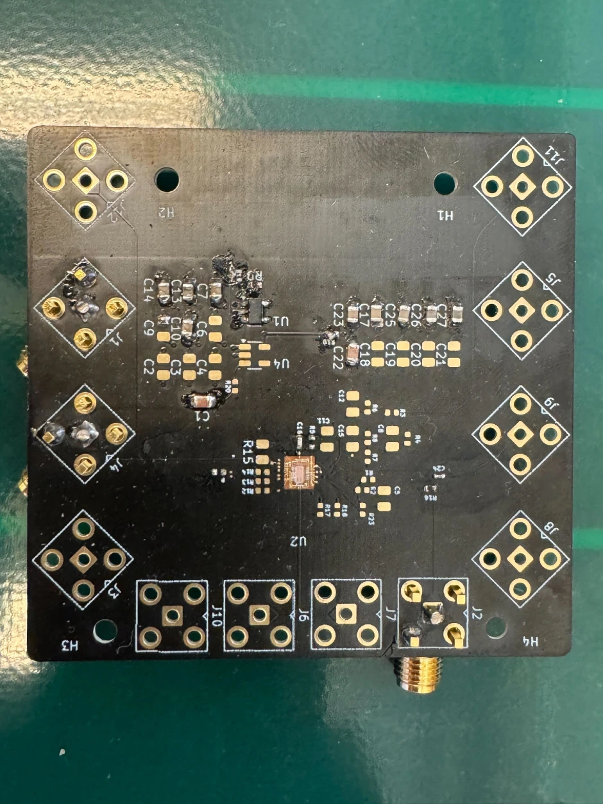
01 / Detector signals
Signal formation in germanium
When radiation deposits energy in a germanium detector, it creates electron–hole pairs. The number of pairs is proportional to the deposited energy. A bias voltage establishes an electric field in the depleted detector volume, causing the electrons and holes to drift toward their respective electrodes.
The moving carriers induce current on the electrodes throughout their drift. The Shockley–Ramo theorem describes this current in terms of carrier motion and the electrode’s weighting field. The pulse shape therefore depends on where the interaction occurred and how the charges move through the detector.
The recorded waveform includes the response of the readout electronics. In a linear model, it is the detector current convolved with the electronics’ impulse response, with noise added. Measuring that response is necessary for both energy estimation and pulse-shape analysis.

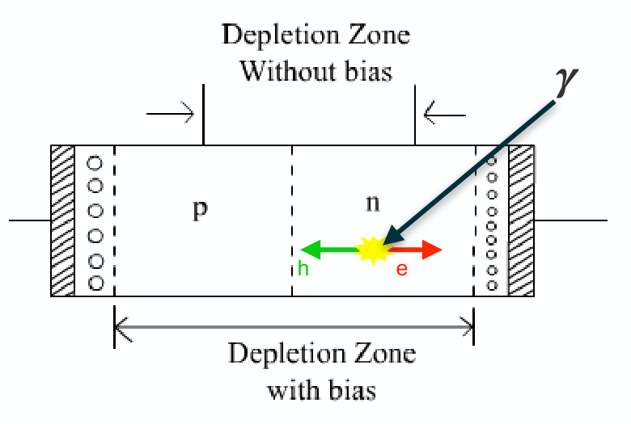
02 / Preamplifier & noise
Charge-sensitive amplification and feedback
A charge-sensitive preamplifier integrates the detector current on a feedback capacitor, Cf. For a charge pulse collected much faster than the feedback discharge, the output step is approximately proportional to the total charge Q, with a magnitude Q/Cf. The feedback capacitance sets the charge-to-voltage gain.
In a conventional resistive-feedback circuit, a resistor Rf sits in parallel with Cf. It provides a discharge path so the amplifier returns to its baseline after a pulse. The resulting exponential decay has time constant τf = RfCf.

|ΔVout| ≈ Q / Cf
τf = RfCf
The resistor contributes thermal (Johnson) noise and can introduce excess noise. A larger resistance reduces its thermal current-noise contribution but lengthens recovery. Long pulse tails increase overlap between events and must be accounted for during amplitude estimation. Pole-zero correction compensates for the exponential response before digital shaping.
Electronic noise and shaping time
Equivalent noise charge (ENC) expresses the readout noise as an equivalent charge at the input. It allows noise contributions to be compared on the same scale as the detector signal. The presentation separates three contributions:
- Series voltage noise
- The input transistor and amplifier contribute voltage noise. Its charge-equivalent effect increases with the total input capacitance, including the detector, transistor, feedback, and stray capacitances. A longer shaping time suppresses the white series-noise contribution.
- Parallel current noise
- Detector leakage current, the feedback resistor, and amplifier current noise contribute at the input. For a given filter family, their contribution increases with shaping time.
- Flicker noise, 1/f
- Low-frequency noise associated with the devices and materials contributes a term that is approximately independent of shaping time in the simplified model.

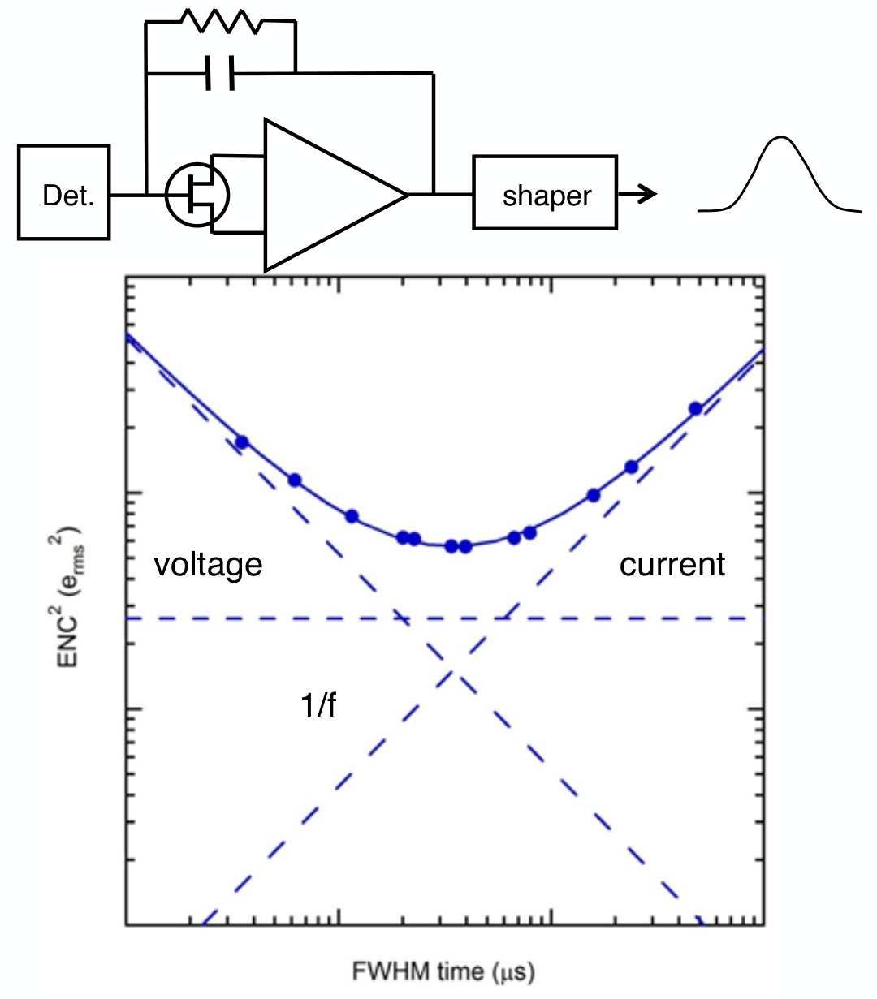
For fixed input capacitance and a given filter family, the simplified dependence can be written as ENC²(τs) ≈ A/τs + B + Cτs. The terms represent white series, flicker, and parallel noise. Their balance produces an optimum shaping time; the coefficients depend on the electronics, detector, and filter.
Keeping the input connection short limits stray capacitance. The detector’s own capacitance and leakage current also matter, so a noise measurement with only the preamplifier does not determine the performance of the complete detector system.
03 / Readout integration
The existing front end and the ASIC approach
The current LEGEND-200 readout uses a low-mass front-end board (LMFE) close to the detector, with the rest of the preamplifier, CC4, farther away. The LMFE contains a junction field-effect transistor (JFET) and feedback elements. Its proximity to the detector limits input capacitance; placing the larger electronics farther away reduces their radioactive contribution near the sensor.
The LBNL front end described in the talk uses a silica substrate, a low-capacitance JFET, and an amorphous-germanium feedback resistor. This is a discrete implementation of the input and feedback components introduced above.
The ASIC approach for LEGEND-1000 brings more of the amplification into a small integrated circuit close to the detector. Here, ASIC means application-specific integrated circuit. Integration is intended to reduce material and external component count while retaining the noise and timing performance needed by the detector.

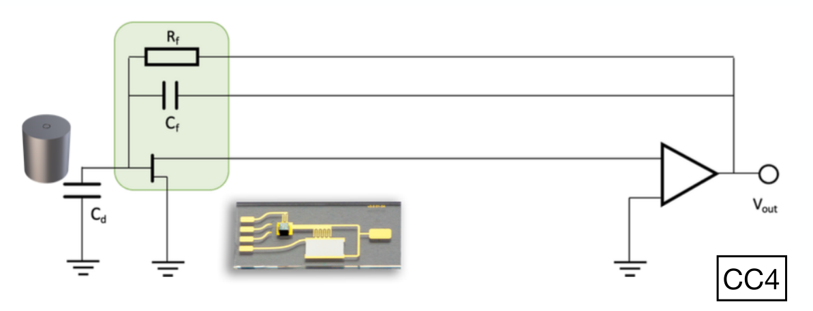

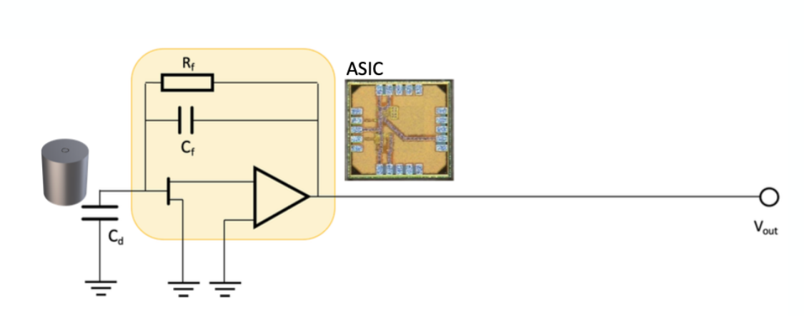
The intended environment is liquid argon. The circuit must also drive long cables and minimize external components, including the components normally used for power regulation. These constraints set the requirements for the amplifier, differential output buffer, and low-dropout voltage regulator (LDO).
| Requirement | Target | Engineering consequence |
|---|---|---|
| Operating environment | Cryogenic liquid argon | Components must function at the intended temperature. |
| External components | Minimize component count | Integrate feedback and power regulation while limiting material near the sensor. |
| Baseline noise | < 1 keV with a detector | The complete sensor and readout determine the noise budget. |
| Dynamic range | 10 MeV at about 2 V amplitude | Small signals and large deposits must fit within the readout range. |
| Signal transmission | Differential output over 10 m / 50 Ω cables | The output stage must drive the cable while preserving the signal. |
| Pulse timing | About 100 ns rise; a few hundred μs decay | Resolve the pulse onset and recover between events. |
04 / ASIC architecture
The L1K65 prototype
The 1 × 2 mm prototype was fabricated in a TSMC 65 nm process. It combines a charge-sensitive amplifier (CSA), voltage reference, differential output buffer, selectable feedback elements, and power management. The process includes thick-oxide devices intended to improve tolerance to high-voltage discharges.
The CSA integrates the detector charge. The buffer provides positive and negative signal outputs for differential transmission. A test capacitor allows a pulser to inject a controlled charge at the input. Power regulation and bias generation support the analog signal path; noise from these circuits can couple into the measurement.
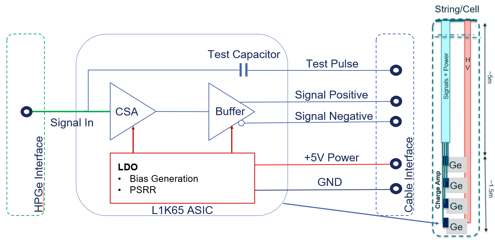

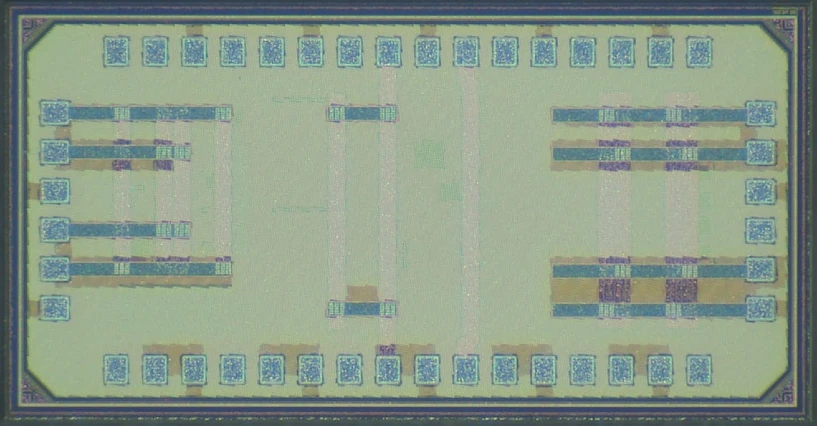
Feedback and operating parameters
The feedback capacitor is specified as 540 fF ± 10%. Internal feedback resistances of 200, 400, 600, and 800 MΩ correspond to nominal decay constants of 108, 216, 324, and 432 μs. The prototype also supports an external feedback resistor.
The specified supply range is 2.5–2.8 V. The noise design considered detector loads of 4–10 pF with 20 pA leakage current. The CSA, buffer, and voltage reference can be operated individually or together, allowing their contributions to be investigated during testing.
Circuit simulations
The simulations presented in the talk compare input loads of 2.5 and 5 pF with a semi-Gaussian shaping filter. Increasing the capacitance increases the series-noise contribution and shifts the minimum toward longer shaping times. Series and parallel white noise were expected to dominate, with an additional flicker-noise contribution.

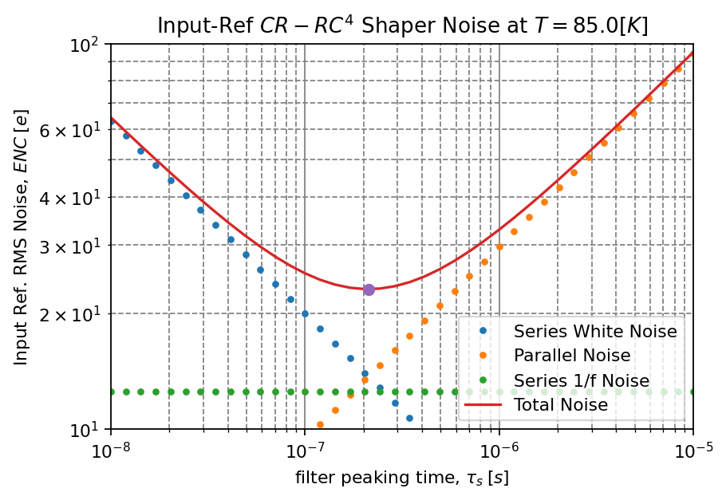

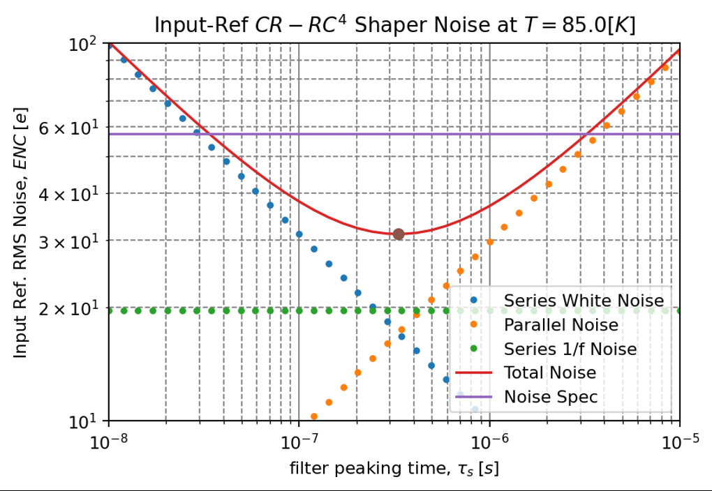
Bandwidth and power regulation
The timing simulations on slide 9 showed a bandwidth of about 100 MHz and an exponential recovery of about 130 μs. For the proposed 100 MS/s analog-to-digital converter (ADC), the analog bandwidth would need to be limited below the 50 MHz Nyquist frequency to prevent aliasing. This filtering has to occur before digitization.
The first LDO topology was another source of noise: simulations showed that its internal feedback could make regulator noise dominate the signal path. The presentation therefore identified a different regulator topology as a design change. These simulations guided further development alongside the prototype measurements.
05 / Test setup
Characterization setup at Berkeley Lab
My focus in this work was experimental characterization: bench testing, waveform analysis, and detector measurements. A test pulser provides repeatable inputs so the electronics can be examined before adding the variability of a physical detector.
At Berkeley Lab, the setup combined the ASIC with a pulser and power supply, waveform measurement equipment, and a shaper and multichannel analyzer. For detector tests, the prototype replaced the commercial front end in a cryogenic point-contact germanium detector setup.
The initial measurements used an external feedback resistor. Cold functional tests showed practically identical linearity behavior, as reported in the talk. This was an early characterization stage, with further tests planned for the final operating environment.

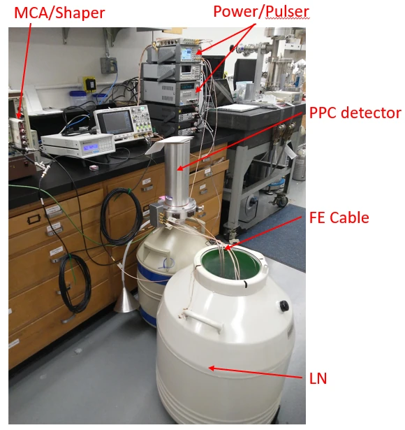
- 01Input
Injected test pulse or charge from the detector
- 02ASIC
Charge converted into an amplified voltage pulse
- 03Acquisition
Record the waveform for analysis
- 04Processing
Correct the decay and apply a shaping filter
- 05Measurement
Estimate amplitude, noise, and timing
06 / Waveform processing
Pulser tests and digital filtering
The bench tests used a 0.5 V pulser setting. Repeated waveforms reveal the fast onset and exponential recovery of the readout. Pole-zero correction compensates for that decay before estimating pulse amplitude with a trapezoidal filter.
The 0.5 V value specifies the test-pulser input. The output amplitudes depend on the injection and readout configuration. The figures show the acquired pulses and the effect of pole-zero correction.

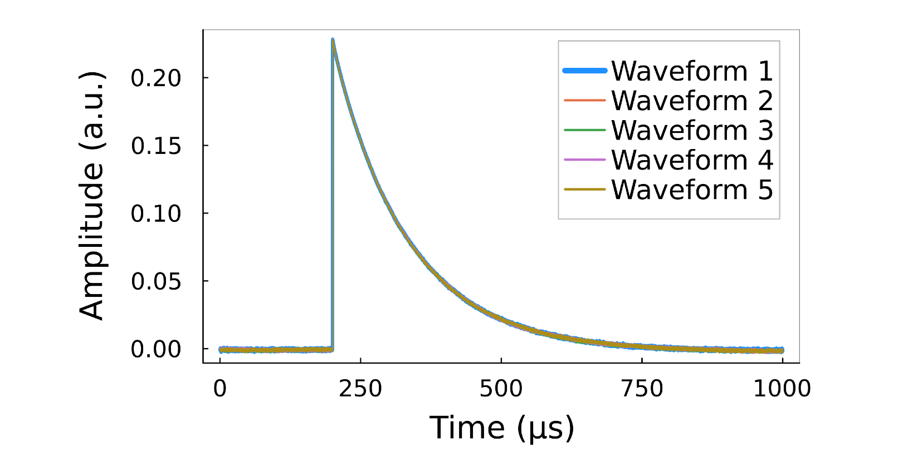

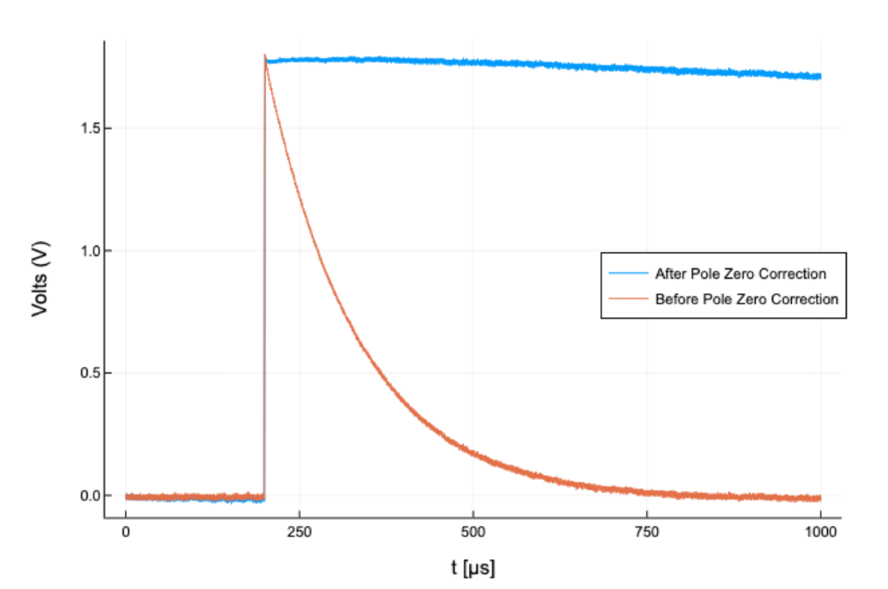
Choosing a shaping time
A longer shaping time can suppress fast voltage noise, but it also integrates more current noise and extends the time occupied by a pulse. Detector capacitance, leakage current, and the feedback network change the optimum. A filter tuned on the bench therefore needs to be checked again with the detector attached.
I scanned shaping time and flat-top duration using 1,000 waveforms. For this room-temperature pulser configuration, the noise minimum lay near a 3 μs shaping time with a 0.2 μs flat top. These settings describe the measured scan, rather than a universal optimum for the chip.

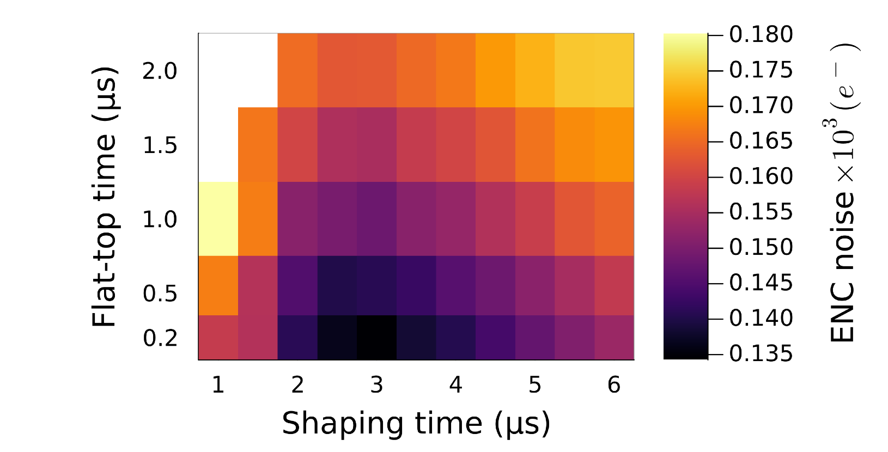

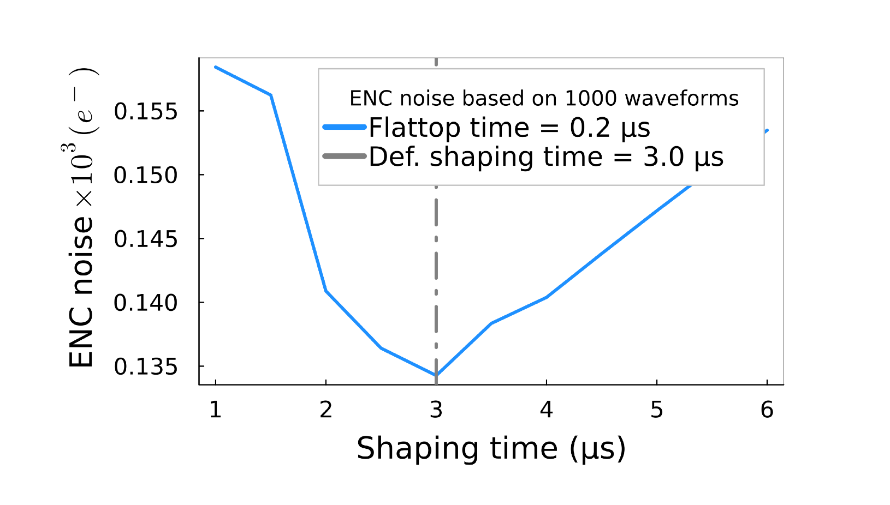
07 / Pulse measurements
Amplitude, baseline noise, and timing
For the pulser dataset, I examined distributions of baseline noise, filtered amplitude, rise time, and decay time. The amplitude distribution measures repeatability at a fixed input, while the timing distributions characterize the pulse response.
- Baseline noise
- The distribution of baseline σ tracks variation in the noise level across recorded waveforms.
- Filtered amplitude
- σ = 0.2 mV for repeated pulses at the 0.5 V pulser setting.
- Rise time, t90 − t10
- Approximately 75 ns, read from the bench-test distribution.
- Decay time
- Approximately 130 μs, read from the bench-test distribution.

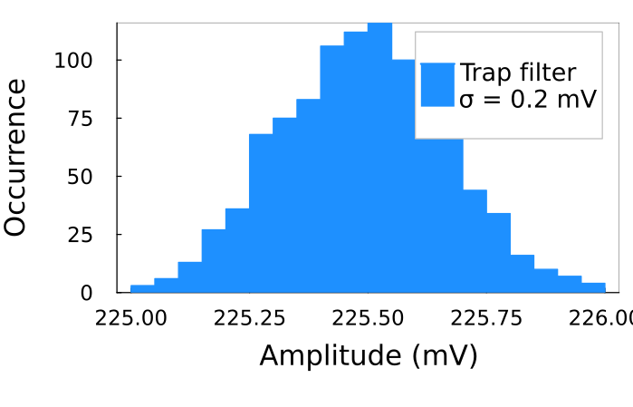
08 / Detector results
Cobalt-60 measurements with a cooled detector
The next test connected the readout to a point-contact germanium detector at 88 K and measured a cobalt-60 source. Its known gamma-ray lines provide a check of the complete detector and electronics chain.
The preliminary spectrum resolved the 1173.2 and 1332.5 keV lines. Their widths combine contributions from the detector, electronics, and the shaping used for this measurement.
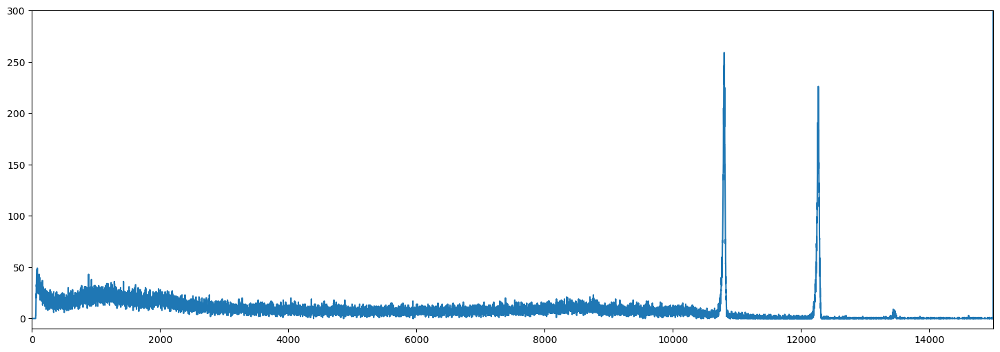
| Gamma-ray energy | Measured peak width (FWHM) | Relative width |
|---|---|---|
| 1173.2 keV | 2.8 keV | ≈ 0.24% |
| 1332.5 keV | 3.0 keV | ≈ 0.23% |
FWHM is the full width of a peak at half its maximum height. Relative widths above are calculated as FWHM divided by line energy, using the rounded values reported in the talk.
The talk attributed the resolution mainly to the detector and the default shaper used in the measurement. The result demonstrated operation with a cooled detector; it did not isolate the ASIC’s intrinsic noise or establish performance in the final liquid-argon installation.
Status in October 2024
The prototype had undergone room-temperature bench characterization, cold functional tests, and preliminary spectroscopy with a germanium detector. Further optimization and testing in liquid argon were planned. The results reported here describe that stage of development.
Source & collaboration
Based on Ann-Kathrin Schuetz’s talk, Characterization of ASIC-based signal readout electronics for LEGEND-1000, presented on behalf of the LEGEND collaboration at the 2024 Fall Meeting of the APS Division of Nuclear Physics in Boston, 9 October 2024.
Signal formation and readout principles: slides 3–6 and 17–21. Prototype layout, noise simulations, and timing: slides 7–10. Architecture: slide 23. Test stand and measurements: slides 11–14. Outlook: slide 15. ASIC design and circuit simulations are collaboration work, credited above. Photographs, circuit diagrams, and plots are extracted from the presentation’s PDF export; panels are cropped without redrawing their contents.
Back to all projects